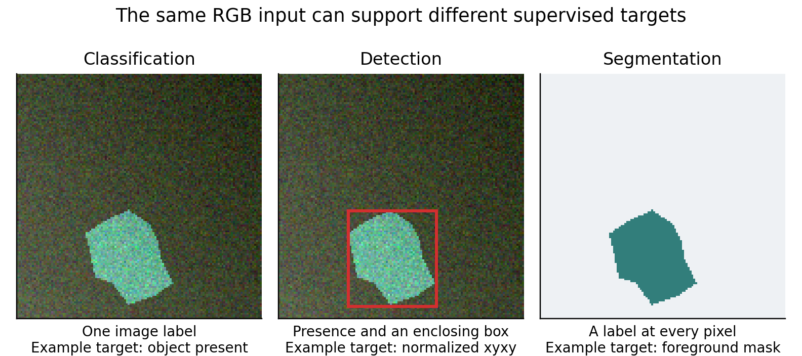

8 Project classify your own small image collection
Suppose your input is a photograph of one manufactured part and your
output is one of three mutually exclusive classes: acceptable,
scratched, or bent. The change from a row of numbers to an image is a
change in representation: a color image becomes a tensor
[3, height, width]; a batch becomes
[batch, 3, height, width]. The class target remains one
integer per image.
Use photographs you own or are licensed to train on. First write labeling rules: how much of a scratch counts, what to do when the part is cropped, whether an image can belong to two categories, and how to label uncertain cases. If “scratched” and “bent” can both be true, use multilabel targets instead of forcing an exclusive label.
Take images across sessions, viewpoints, lighting, and backgrounds. Keep every photograph of the same physical part in one split. If all acceptable parts were photographed on a blue desk and all defective parts on a red desk, the network can learn the desk. More rotations of the same pictures will not repair that confounding.
Arrange the pre-split images as:
parts/
train/acceptable/...
train/scratched/...
train/bent/...
val/acceptable/... # also scratched and bent
test/acceptable/... # also scratched and bentOpen a fresh terminal at the companion root, then enter this project. Use Python 3.12 and a separate neural environment. Choose exactly one official torch/torchvision installation below, according to your device. The CUDA command requires a compatible NVIDIA GPU and driver; the CPU command needs no NVIDIA device. These are inspected reference versions, not an environment installed during preparation. M21 F15
cd examples/tiny-ml
python -m venv .venv-neural
source .venv-neural/bin/activate
# CPU choice
python -m pip install torch==2.8.0 torchvision==0.23.0 --index-url https://download.pytorch.org/whl/cpu
# OR compatible CUDA 12.6 choice in a separate environment
# python -m pip install torch==2.8.0 torchvision==0.23.0 --index-url https://download.pytorch.org/whl/cu126
python -m pip install -r requirements-cpu.txtBefore collecting real parts, run the complete pipeline on an original three-class geometric fixture. This tests file discovery, labels, training, saving and inference without requiring a photo collection. It does not establish real defect-detection quality.
python make_classification_data.py --out data/classification-shapes \
--train 24 --val 8 --test 8
python train_image_classifier.py --data data/classification-shapes \
--backbone tiny --epochs 2 --batch-size 8 --lr 0.001 \
--device cpu --out runs/shapes-classifier
python predict_image_classifier.py runs/shapes-classifier \
data/classification-shapes/fresh-circle.png --device cpuThe generator uses separate split seeds, randomized position/size, and colors independent of shape class. The fresh circle is generated with a separate seed and is not part of a fitting or selection split. Its classes are circle, square, and triangle; the same trainer can later learn your separately defined part labels.
Run the supplied scratch model first:
python train_image_classifier.py --data parts --backbone tiny \
--epochs 10 --batch-size 16 --lr 0.001 --device cpu \
--out runs/parts-tinyAPI target: PyTorch 2.8.0 and torchvision 0.23.0, a documented matching pair. This script was syntax-checked only. Install the official PyTorch build appropriate for your operating system and GPU driver; do not assume a CUDA wheel from another machine is compatible. M21

Figure 3 The same original generated RGB input can teach different outputs. These are illustrations of target formats, not predictions from a trained model. Classification returns one label, detection adds a box, and segmentation predicts a pixel mask.
Convolutions features and the output head
The small CNN has three convolutional stages with 16, 32, and 64 feature channels. A convolution reuses small spatial filters over an image, so a feature such as an edge can be detected at many positions. ReLU adds nonlinearity. Max pooling reduces spatial resolution. Global average pooling reduces each final channel to a number, and a linear head maps the 64 numbers to class logits.
A logit is an unrestricted score before conversion into a probability. Training passes raw logits to cross entropy and integer class labels as targets. Do not apply softmax before this loss. At inference, softmax can turn logits into a class distribution; the largest logit and largest softmax probability identify the same class. A probability still needs calibration checks if you intend to use it for an accept/reject decision.
The scratch route resizes images to 96 × 96 and scales RGB values to
[0,1]. This is simple, but it distorts aspect ratio and can
erase narrow scratches. That is a deliberate starting baseline. If
defects occupy two original pixels, shrinking the image may remove the
information before the network sees it. Try aspect-preserving resize
with padding or carefully selected crops, and update the deployment
preprocessing exactly.
--epochs counts passes through the training set.
--batch-size controls how many images contribute to one
update. --lr is the optimizer step size. AdamW uses weight
decay 0.0001 in this example. --out identifies an
experiment directory; --device cuda selects the GPU if a
compatible installation is present. A fixed seed of 42 makes the example
easier to compare but is not a guarantee of identical results on all
hardware.
Transfer learning before a bigger scratch network
Try the alternative:
python train_image_classifier.py --data parts --backbone mobilenet \
--epochs 10 --batch-size 16 --lr 0.001 --device cuda \
--out runs/parts-transferThis downloads MobileNetV3-Small ImageNet weights, freezes the pretrained parameters, replaces the final classifier, and trains only that new layer. The pretrained weights' own preprocessing is used, rather than guessing normalization or crop rules. Frozen feature-extractor batch-normalization statistics stay in evaluation mode. The script keeps the rest of the classifier frozen; this is a conservative head-only baseline. M06
With enough target-domain examples, the next experiment is to unfreeze a late block and use a substantially smaller learning rate, such as a candidate 0.00001 for pretrained weights while the new head uses a larger rate. Recreate the optimizer with the newly trainable parameters. Choose the rates on validation. If transfer hurts, check crop behavior, color channels, label mapping, and domain mismatch before concluding that pretraining is useless.
Rights checkpoint: torchvision code uses BSD-3-Clause, but that does not automatically license every dataset or pretrained weight for every use. Torchvision explicitly asks users to review model and dataset terms separately. The scratch option avoids pretrained-weight terms; your image rights still matter. Public availability is not permission to train or redistribute. M11
What data the two image architectures need
The scratch CNN learns both visual features and the class decision from your examples. Its small capacity makes a tightly controlled visual task feasible, but it cannot invent the diversity of lighting, defects, and backgrounds absent from training. Transfer learning starts with general visual features and often makes better use of a small labeled collection; those features may still be inappropriate for unusual sensors, microscopic patterns, or very fine detail. Neither route removes the need for held-out acquisition sessions and examples of each class.
Measure learning curves using increasing numbers of independent physical parts, not augmented copies. Compare the head-only model with partial fine-tuning only after labeling and preprocessing are credible. Select architecture based on the task's needed spatial detail and the available labeled variation, rather than a fixed “images per parameter” rule.
Run the saved image classifier on an unseen photograph
python predict_image_classifier.py runs/parts-tiny new_part.jpg --device cpu
python predict_image_classifier.py runs/parts-tiny new_part.jpg --device cuda
# The same commands work with runs/parts-transfer.Both paths load metrics.json for architecture and class
mapping, reconstruct the architecture, load best.pt, apply
the original preprocessing, enter evaluation mode, and return class
probabilities plus the top class. The CUDA path moves the model and
input to CUDA; the checkpoint is initially loaded on CPU. Both use FP32,
so there is no implicit CPU/GPU dtype mismatch. CUDA can give slightly
different numerical results and should be validated. These neural
inference commands are syntax-checked only.
The transfer inference constructor uses weights=None
because the saved checkpoint already contains the full weights; it does
not redownload a baseline. A deployment must keep these companion
metadata files with the checkpoint. The script does not impose a
confidence-based rejection threshold because none has been validated for
your dataset.
Small image datasets fail in recognizable ways
Read metrics.json, including class mapping, per-epoch
validation loss, test macro-F1, and the confusion matrix. The lowest
validation loss selects best.pt. Macro-F1 gives each class
equal weight, so a rare class cannot disappear inside overall accuracy.
Also inspect recall for the class whose mistakes are most costly.
Start with no augmentation, then add transformations that preserve the real label. Horizontal flips can be valid for an unoriented part but invalid for reading left/right arrows. Color jitter can model lighting or destroy a color-coded fault signal. Random crops can remove the only defect while preserving the original defect label. Augmentation increases variation; it does not create independent evidence.
When a rare class is ignored, first verify its labels and examples. Then consider class-weighted loss or controlled sampling. The weights should be derived from training data and the chosen cost model. Oversampling a handful of rare images repeatedly does not create new rare cases. Evaluate on the real prevalence expected after deployment, including completely unfamiliar objects if the product must reject them.
Before a real training run, attempt to overfit eight clean examples. Failure to do so is a useful bug signal: wrong target type, wrong class ordering, detached gradients, a frozen head, inconsistent normalization, or labels unrelated to inputs. Passing this test does not establish generalization; it establishes that the learning machinery can fit something.